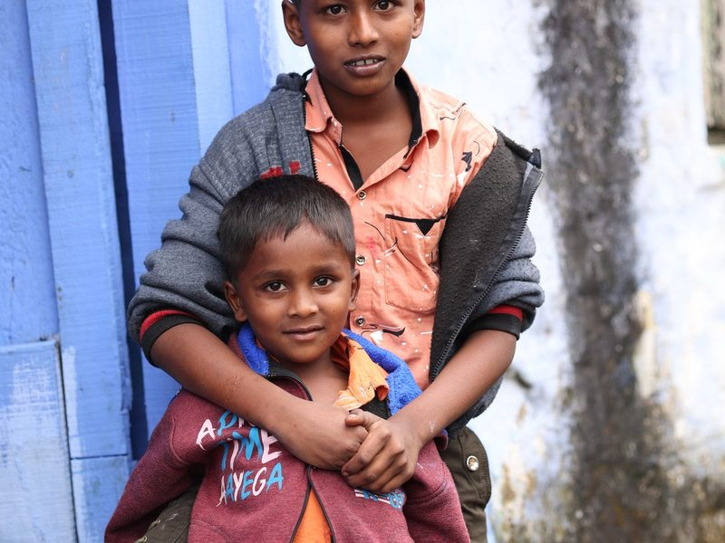
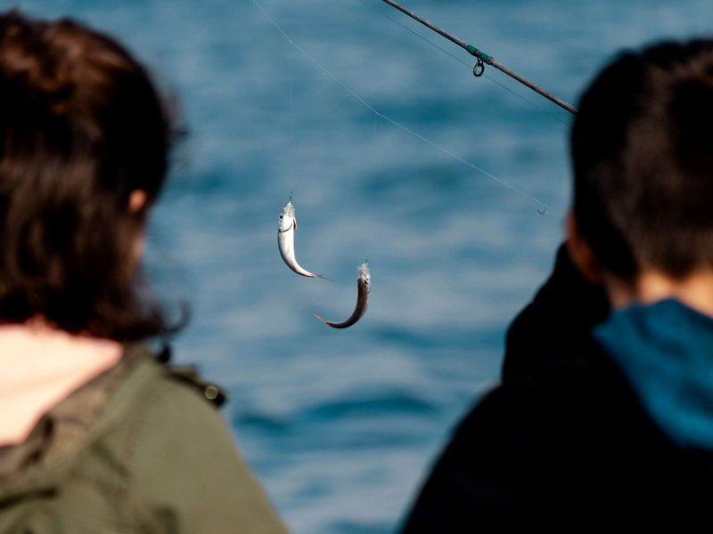
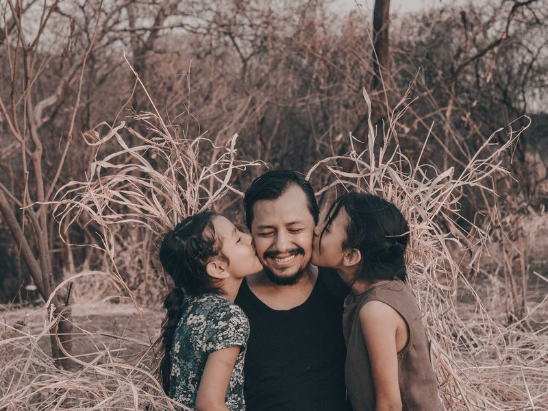
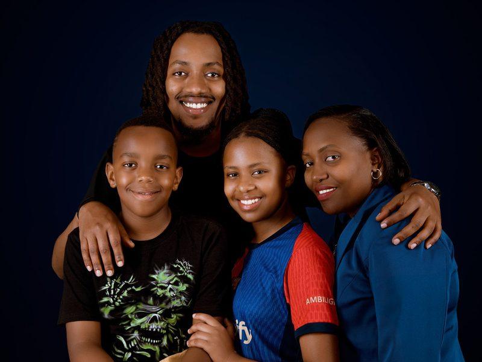
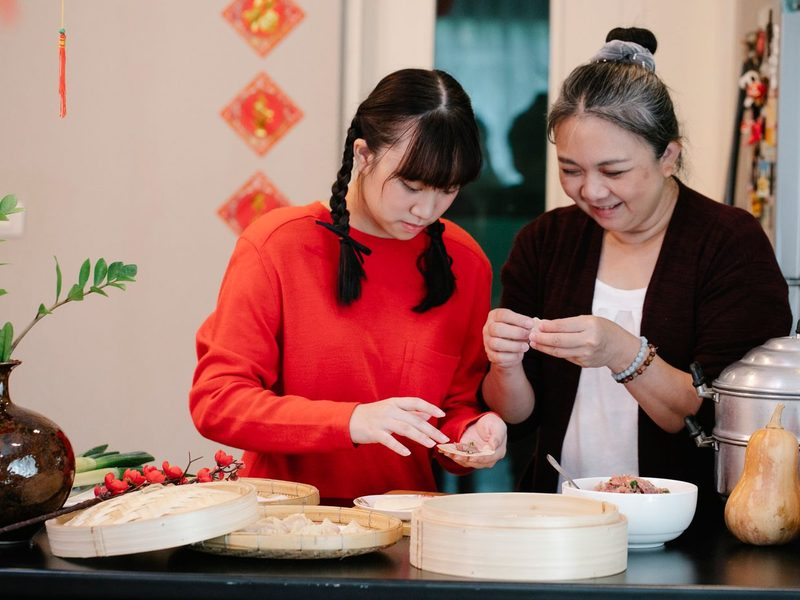
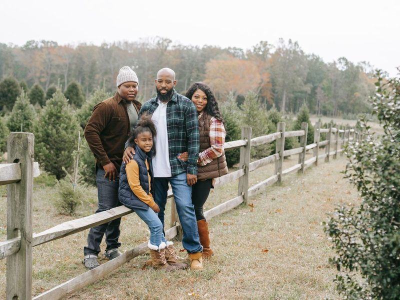
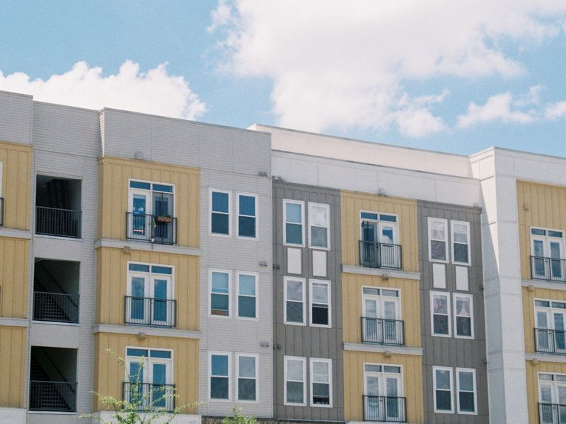
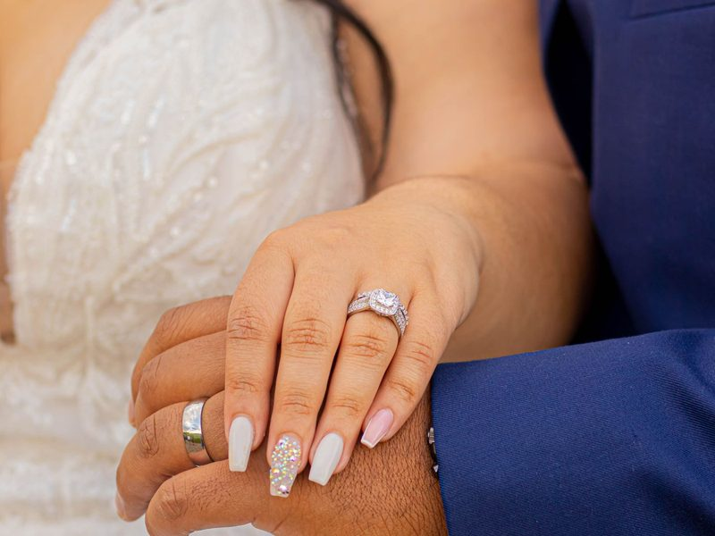

1auntn.
姑姑；阿姨；伯母
相對：uncle
My aunt lives in Kaohsiung.我阿姨住在高雄。

2brothern.
兄弟
相對：sister
My brother is two years older than me.我哥哥比我大兩歲。

3cousinn.
堂（表）兄弟姊妹
男女都用 cousin
My cousin and I go fishing on weekends.我和表哥週末會去釣魚。

4daughtern.
女兒
相對：son
Mr. Lin has two daughters.林先生有兩個女兒。

5familyn.
家庭；家人
複數 families
There are four people in my family.我家有四個人。
6fathern.
父親
dad、daddy
My father cooks breakfast every morning.我爸爸每天早上做早餐。
7grandfathern.
祖父；外公
grandpa
My grandfather tells me old stories.爺爺跟我說以前的故事。

8grandmothern.
祖母；外婆
grandma；祖父母 grandparents
Grandma makes the best dumplings.奶奶包的水餃最好吃。
9husbandn.
丈夫
相對：wife
Her husband often washes the dishes.她先生常常洗碗。
10mothern.
母親
mom、mommy
My mother reads with me every night.媽媽每天晚上陪我看書。

11parentn.
父親或母親
常用複數 parents 父母
My parents take good care of me.我爸媽把我照顧得很好。
12relativen.
親戚
複數 relatives
We visit our relatives at Chinese New Year.過年時我們會去拜訪親戚。
13sistern.
姊妹
相對：brother
My sister and I share a room.我和妹妹睡同一間房間。
14sonn.
兒子
相對：daughter
Their son is in junior high school.他們的兒子在念國中。
15unclen.
叔叔；舅舅；伯父
相對：aunt
My uncle teaches me to play the guitar.叔叔教我彈吉他。
16wifen.
妻子
複數 wives
He and his wife ride bikes on weekends.他和太太週末會一起騎腳踏車。
17bornv.
出生
bear-bore-born；be born 出生
I was born in Taipei.我在台北出生。
18growv.
長大；成長；種植
grow-grew-grown；grow up 長大
Plants grow fast in summer.植物在夏天長得很快。

19livev.
住；生活
live with 和…一起住
We live in a small apartment.我們住在一間小公寓。

20marriedadj.
已婚的
get married 結婚
My aunt got married last year.我阿姨去年結婚了。